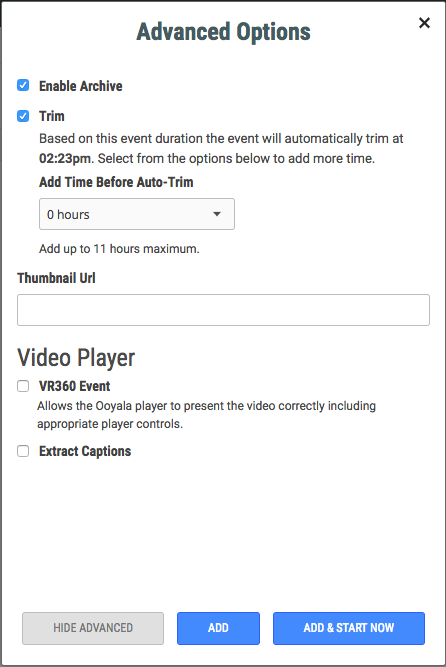

Use the Events page to schedule the recording of segments from a channel's live stream for archiving and playback at a later time and date as a video on demand (VOD) asset.
Events are created within schedules.
| Add Event Dialog | Considerations |
|---|---|
|
Understanding Add Event
Add an Event to HA Channel
Important:
|
|
|
 |
Archive and Trim Events
|
|
Non-archived Events
|